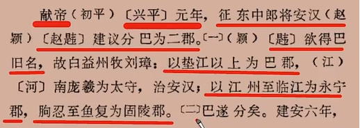
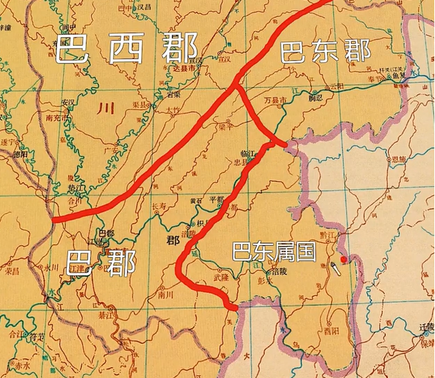
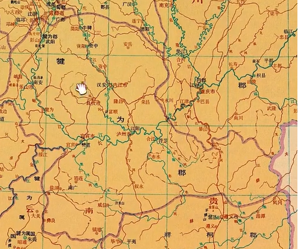
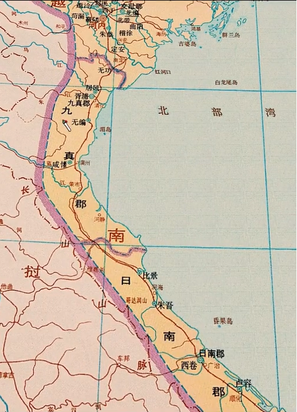

武陵郡
- 治所临沅
- 武陵有个叫汉寿的县，在东汉相当长时间里是荆州刺史的治所，吴时改成吴寿，晋改回汉寿；（葭萌在蜀汉时期被改名汉寿，晋时改晋寿）
- 迁陵在湘西，现保靖东北。2002年保靖里耶镇出土过36000片秦简，里耶在秦朝属迁陵县。
- 镡成(xin2)是秦时平定岭南设的军事据点，现湖南靖县附近
- 充县，现湖南桑植，贺龙元帅故乡。
- 夷道，现湖北宜都。
- 泰山太守应劭
- 交州刺史朱符
- 武陵蛮的传说里：
- 秦以二十两为镒
- 三代以前分土，自秦汉分人
- 周末始有将军官
- 吴姓自周命氏
巴郡
- 巴郡的变迁过程
- 献帝初赵韪提议（华阳国志）

- （朐忍chun2，意蚯蚓）
- 建安五年赵韪造反，刘璋斩之。六年，鱼复的蹇胤又提议改分
- 涪陵的谢本又请求划分新郡

- 刘备入益州时将巴东改成江关都尉，后改固陵。然后又有人不满了要改回巴名。
- 蜀汉时巴郡地图：
涪陵郡
犍为郡
- qian2
- 治所在现武阳彭山，离涪陵郡很远。
- 孝武帝时置犍为郡，时治鳖（现贵州遵义），昭帝时迁僰道（bo2,现四川宜宾），后迁武阳。

江阳郡
- 建安十八年刘璋置郡，本来是犍为郡的一部分。
- 可考证的县只有三个：汉安，江阳（现四川泸州），符节
- 朱提(shi2,通匙)，前犍为属国的治所，后改朱提郡，今云南昭通
- 平夷，今贵州毕节一带，东汉时属牂牁郡。
南方诸郡
- 东汉时南方四郡（牂牁郡，越嶲xi1郡，益州郡，永昌郡）
- 建兴三年，诸葛亮征四郡，四郡皆平。改益州郡为建宁郡，分建宁、永昌郡为云南郡，又分建宁，牂牁为兴古郡
- 云南郡治所梇栋，现姚安
- 青蛉，现大姚，意为蜻蜓
- 越嶲郡治所邛都，现西昌。越嶲夷人数次造反，连杀两任太守，后来太守不敢到郡上上任，只敢住在八百里外的安上县，后来张嶷上任才控制住。
- 益州郡治所滇池，现云南晋宁东北边。汉武帝时攻打昆明国，因为滇池的存在，特意在长安挖了一个昆明池模拟水战环境。现在西安还有昆明池的遗址。
- 建宁治所味县mei4，今云南曲靖
- 建宁修云是三国时期新设的县，现大约在云南弥勒附近。
- 建宁谈稿，现云南盘县附近，三国时期撤县，西晋时才重新设立
- 牂牁治所且兰，且音沮，汉时叫故且兰，原来是一个叫且兰的部落的地方，大约在现贵州黄平附近
- 牂牁夜郎，旧部落名，现在大约在贵州关岭附近
- 牂牁毋敛，现在大约在贵州独山附近
- 永昌郡西汉时是没有的，东汉时才新开拓
- 永昌治所不韦，现云南保山附近
- 永昌永寿，三国或西晋新设
交趾郡
- 现越南北部
- 治所龙编，现河内附近
- 临尘，现广西崇左附近，三国时期应属郁林郡
- 宛温，宛音yuen1，三国时期应是兴古郡治所，现砚山附近，东晋改名宛暖，避权臣桓温讳。
- 西随，现云南金平附近，三国时期应属兴古郡
九真郡、日南郡
- 九真治所胥浦，现越南清化附近，曾经是越南西都
- 日南治所西卷，现越南广治附近
